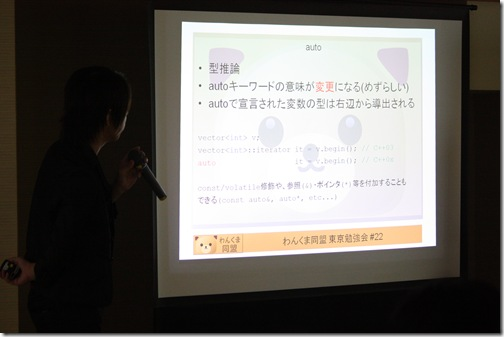
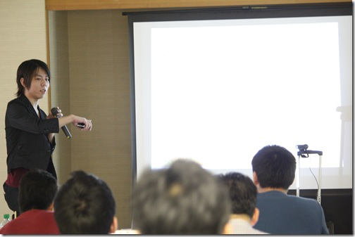
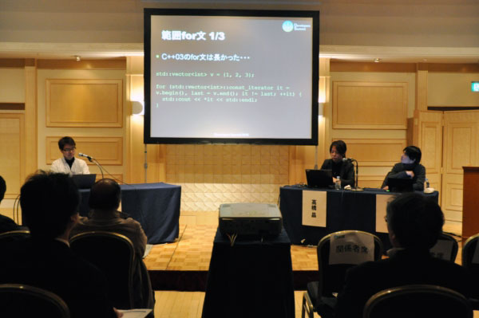
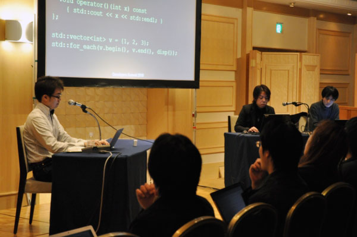
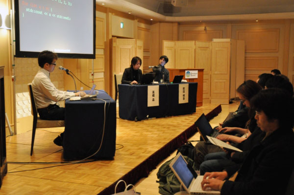
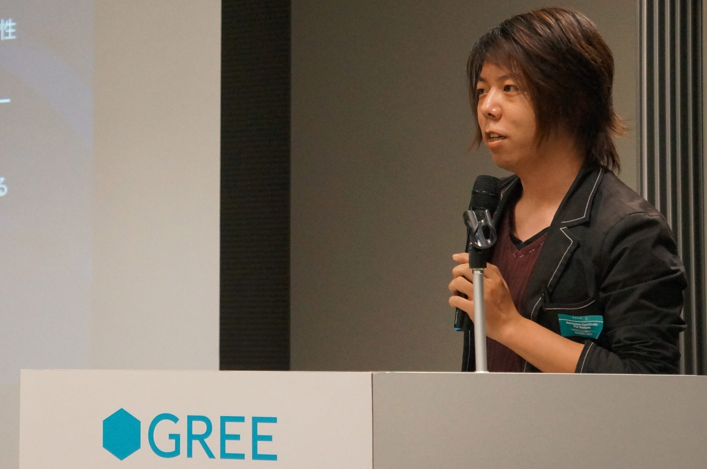

Akira Takahashi
Japanese version (日本語バージョン)
This is Akira Takahashi’s personal site.
It includes his profile, public presentations, published books,
technical articles, etc.
For work inquiries, please use one of the mail addresses in Contact.
Akira Takahashi
Born March 1, 1985 Miyagi-ken. Japan
Affiliations
Blogs
GitHub Repository
- Personal mail address : faithandbrave@gmail.com
- My Company mail address : akirat@preferred.jp
- X : @cpp_akira
Programming Languages
C++, Python, TypeScript, JavaScript, Elixir, Ruby, C#, Objective-C++,
PHP.
Work Experience
- 2005-2007 Delivery management system for a transportation company
- Client program for Windows CE devices (C++), and server program on
Windows Server (C++)
- The Windows CE compiler was even more limited than Visual C++ 6.0,
so the language was a subset of C++98. I implemented the features of the
Boost C++ Libraries that we needed for that environment
- The client communicated with the server in real time over a
TCP-based protocol, and the server talked to an Oracle database
- 2008-2009 iOS game development
- Developed Square Enix’s first iOS titles: “Crystal Defenders” and
its sequel “Sacred Lands”
- It was the iOS 2.1 era, and the NDA was strict enough that even
exchanging information between developers was prohibited. With only the
official English documentation and a little forum information available,
I translated the documentation into Japanese and shared it within the
team
- Written in Objective-C++
- Rendering with OpenGL, music playback with OpenAL
- 2010-2017
- iPhone application about cars for children (Objective-C)
- E-book iPhone application (C++, OpenGL)
- GungHo Online Entertainment’s “Ragnarok Odyssey ACE” (C++,
PlayStation Vita)
- Responsible for monster and projectile movement
- Training and education for professional programmers
- Design, development process, test-driven development, and so on
- 3D browser game (C++, Emscripten)
- Compiled a C++ program using OpenGL into JavaScript with Emscripten,
and developed a 3D game running in the browser
- Koei Tecmo (Gust brand) “Trinary Girls” (Kakucho Shoujo Trinary)
- Developed a 3D game for smartphones with the Unity 3D game
engine
- Responsible for the client (C#) and the server (Python, Django)
- Real-time strategy game for smartphones
- Developed real-time network battles with the Photon game engine (C#)
and Unity 3D
- Server development for a smartphone quiz game
- Developed the quiz game server in Elixir
- Published the programming magazine “Programming no Madosho” (The
Grimoire of Programming), Vol.1 to Vol.3
- In addition to interviews with notable figures such as Bjarne
Stroustrup, the creator of C++, leading experts on each programming
language in Japan wrote articles for it
- With few programming books for intermediate and advanced readers
available, I was able to create a programming magazine that collected
advanced topics
- 2017- Preferred Networks, Inc.
- Participating in the development of MN-Core, an accelerator for deep
learning
- Developing the emulator, assembler, and more (C++, Python)
- 2023- Game development
- Participating in the development of “Theory”, a P2P networking game
engine by TVT Inc.
Pictures


Wankuma Study Meeting in Tokyo #22 - “C++0x - Talking about the
future of the language”



Developers Summit 2010 “C++0x, Ruby, ECMAScript5 About International
Standardization”
Boost.StudyMeeting #6 in Sapporo

GREE Tech Talk #05